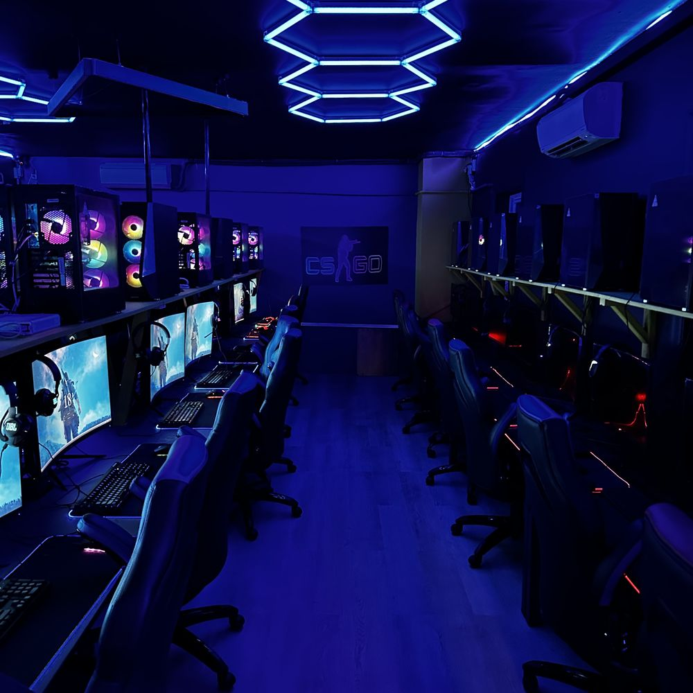

Jason Naidoo Gaming & Esports Arena opened its doors in Johannesburg with a simple mission: give South African players access to the same professional training, equipment and competitive stage that top esports regions take for granted. What started as a small coaching setup has grown into a full arena — pro gaming stations, a VIP lounge, VR and racing simulators, and a weekly tournament calendar that draws players from across Gauteng.
At Next Level Gaming, our mission is to build South Africa's most inclusive gaming community. Founded by Mr Naidoo in Johannesburg, we provide affordable access to world-class gaming hardware, competitive tournaments, and skills development - creating a safe space where casual players become champions and champions become legends.
No Contracts. No Lag. Just Game.
Why Next Level Gaming?More Than An Internet Cafe. It's Your Arena.Other places rent you a PC. We give you an advantage.
1. Zero Lag, Zero Excuses: 1GB Dedicated Fibre + RTX 4070 Rigs + 240Hz Monitors. What you click is what happens.
2. Flexible Rates That Work For You: Whether you have 1 hour after school or want to grind all night - our hourly, 3-hour, and day-pass rates give you pro gear without the commitment.
3. You Pay For A PC, You Get A Community: Your hour includes access to tournaments, coaching tips from our ranked staff, and a crew of 1200+ gamers - not just a screen and a chair.
Next Level Gaming - Where Johannesburg Comes To Play.
View Membership PlansMeet our founder

Founder & CEO • Next Level Gaming
From grinding Ranked on a low-end laptop to building Johannesburg's premier esports arena. Jason started Next Level Gaming with one mission: give every gamer access to pro-level gear without the R40k price tag. What started as 10 PCs in 2021 is now home to 1,200+ members, weekly tournaments, and the fastest fibre in the city.
© Gaming & E-Sports Arena-Johannesburg South Africa-SME Registered-Privacy Policy-Terms of Service